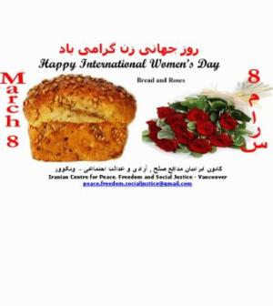
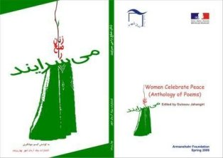

|
|
تولبدات هنری و فرهنگی به مناسبت روز جهانی زن
يكشنبه18 اسفند 1387
کارت پستال های 8 مارس
کارت پستال کانون ایرانیان مدافع صلح , آزادی و عدالت اجتماعی - ونکوور

Iranian Centre for Peace, Freedom and Social Justice - Vancouver
peace.freedom.socialjustice@gmail.com
ونکوور
صلح را زنان می سرایند… مردان نیز
مجموعه کوچک شعر " زنان صلح را می سرایند" به مناسبت 8 مارچ، روز جهانی زنان به خوانندگان پیشکش می شود.

این گلچین که اکثر شاعران آن زن هستند، شامل شعرهایی است از اهل قلم کشورهای مختلف در پاسخ به فراخوانی به نام " کاروان هزار و یک شعر برای صلح در افغانستان" که در زمستان 1380 در پنج قاره جهان پخش شد. منتخبی از میان انبوه اشعار جمع شده در دو کتاب شعر " کاروان صلح" و " کاروان مهر برای جوانان " در نوروز 1382 در کابل چاپ شد. اکنون بنیاد آرمان شهر در افغانستان با همنوا ساختن شعرهای نسل جوان کشور با این کاروان، صدای صلح دوستان افغانستان را نیز به گوش جهان می رساند.
در چه بد بختی گرفتار شده بود
این سرزمین بی نوا
آزادی ممنوع!
مدرسه ممنوع!
تابش خورشید ممنوع!
این مجموعه ی نا همگون، صدای وجدان های آگاه و خوب جهان است که آسایش افغانستان، مساوات برای زنان، آینده جوانان و صلح را که " می توان آن را همچون قانونی پذیرفت " درد مشنرک خود می دانند، چون
لالایی بی همتایی است صلح
سعادتی تقسیم شده
میان همه
سرور سروران است صلح
این شعرها پیام همدلانی است که فراتر از همبستگی به ما نیز هشدار می دهند:
صلح بذرهای مدارا را خواهد افشاند
وقتی که ستم دیدگان پیشین، هرگز به ستمگران آینده تبدیل نشوند.
آنها به درستی نقش فرد فردمان و مسئولیت فعالانه خودمان را در " بس گفتن به جنگ " به ما گوشزد می کنند. یعنی می خواهند به " قربانی " بودن خود عادت نکنیم، دادخواه باشیم، درست انتخاب کنیم، مشعل دانش را روشن نگه داریم. در یک کلام، رشته سرنوشت خود و جمع را خود به دست بگیریم... که " وطن باغچه ای است در زبان که باید هر روز آبیاری شود ".
از که می خواهیم روشن تر از ما جهان را تماشا کند!
که به جای ما عمل خواهد کرد، چه کسی حقایق را خواهد گفت،
زمانی که خود از گفتن آن روی گردانیم؟
از تمام شاعران و اهل قلم که به دعوت ما پاسخ دادند منت داریم .
از عشق، از دوستی
از مهر و نیکی سخن گفتن
دستادست
در کنار هم
زندگی ای لایق آدمی برپا داشتن
زحمت می خواهد
گیسو جهانگیری 8 مارچ 2009 / 18 حوت 1387